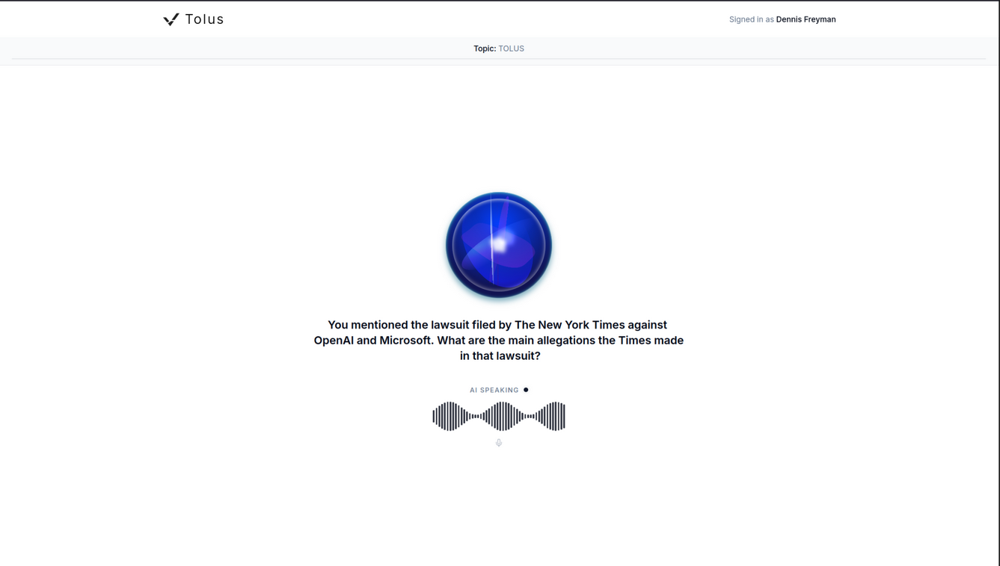

Verification is such an interesting concept. Goes back pretty far: did someone actually do the work they claim they did? It’s even the whole premise Tolus, my startup, is built on, well, kind of, until now.
Our whole premise is that we don’t believe in verification, i.e. companies like Turnitin.com, in the age of AI. All students use AI, most teachers are using AI, and punishing it is fighting a losing battle with the future. Our startup is centered on the fact that instead of verifying if someone used AI, simply verify if they get the work they submitted. Because if they do, then who cares if they used AI?
We’ve been doing this with oral examination, having the student discuss their work with an AI agent that’s aware of the work they submitted. Think interview, but on a large scale, scalable to millions of people.

As we launched our first pilot with a high school CS department, we got all positive feedback other than one problem. What if students use AI to cheat on the actual voice Tolus sessions? One student pointed out to his CS teacher, “What if I just hold up ChatGPT Voice to have that AI talk to this AI.” This is a legitimate issue, because although yes, it does require a lot of effort to cheat in this way, as you have to give the voice AIs prior context of your assignments, have it speak in natural student tone, it’s all relatively doable.
So now how do you verify the ability of the verification tool? Is it easier to verify that than the original assignment? Does that make Tolus obsolete? No, we don’t think so, but how do you at least try and prevent cheating?
The CS teacher had the suggestion of taking pictures of the student at random time intervals to verify whether they are doing the work. This is a really interesting thing, because I do think it can work to an extent, but there are so many issues with this. First of all, privacy. As someone who spent years digging into as much cybersecurity as I could, I really don’t want to implement that feature. Taking pictures of minors possibly during school hours is pretty awful. Also, as far as software security clearances, that would add a lot of suspicion and costs. Hao and I had the idea of doing voice level verification, but security clearance on that is even worse.
The third option to this is to warn teachers about the teaching possibilities. Although we originally imagined Tolus defenses as more of a homework type of assignment, upon testing with that same CS department, they said it actually worked pretty well, since most students carry around devices like AirPods every day, and for those that don’t, purchasing a few headsets really isn’t the end of the world for more departments.
So now, the dilemma:
- Just leave stuff how it is, warn teachers, and let them figure it out.
- Implement a feature that I really don’t want to implement, but one that will likely work.
- Reframe our product as one that takes up class time for the greater good.
It’s an interesting question, and one we don’t quite have the answer to just yet. What I do know is I want to build my company the right way. I don’t want to implement features I don’t believe in. The whole reason I started in EdTech is because I believe in improving how students are taught day to day, and in this story we call life I’d rather be one of the Pied Pipers instead of one of the Hoolis. (Sorry, I just binged all of Silicon Valley lol)